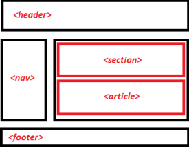

SOAL
I. Isilah pertanyaan di bawah ini dengan benar!
1. Silahkan jelaskan dengan singkat, menurut kalian apa itu pemrograman web ?
2. Buatlah halaman website sederhana dengan semantic html, dengan susunan kurang lebih seperti berikut !

Silahkan upload digithub dan deploy digithub pages. Tuliskan link nya, link github dan link github pagesnya !
3. Silahkan buat program php sederhana untuk menampilan data dirimu (nama, kelas, absen, alamat, dsb).
untuk variabelnya ditulis menggunakan variabel global namun memanggil variabelnya harus dengan menggunakan function !
Silahkan tulis kodenya dikertas.